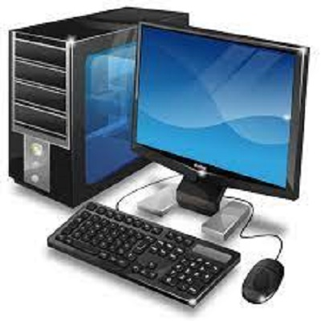
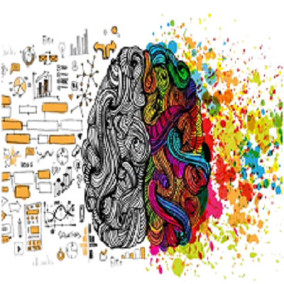

RV University supports liberal education and encourages students to enhance their abilities in various domains. We strive to help students grow in a holistic learning environment that will facilitate all-round development of the student. We provide a wide selection of courses under our different schools. Each school is headed by professionals who will guide the students during their learning journey. Our qualified faculty will work with the students individually and will ensure that all queries and doubts of students are cleared. Currently RV University has 5 schools which are:
The School of Business (SOB) at RV University focuses on developing future entrepreneurs. The faculty comes with rich experience in teaching, research and work experience in different fields of knowledge and industries. Skills related to business management and administration will be developed through real life experiences. A degree in business administration empowers a degree holder with a versatile outlook and surfeit of tools to solve a problem with ingenuity and aplomb. Learning at the School of Business at RV University focuses on holistic education that creates critical thinking individuals with strong disciplinary understanding, broad perspective of issues and problems gained through multiple lenses, and hands-on experiences and skills to take on challenges and solve problems at the workplace and in real life. The School strives to provide a space where students are able to pursue their interests, satisfy their curiosities and excel in any field they choose.
The School of Computer Science and Engineering (SOCSE) at RV University encourages learning in an asynchronous environment allowing each student to go at their own pace. Activity based learning will enhance logical and critical thinking skills and will help students adapt to the constant changes taking place in this domain. Skill developement and portfolio building will be given equal importance as students will be encouraged to take up projects and take part in various events. This school focuses on problem-solving, critical thinking, innovation, creativity, communication, entrepreneurship & data science to deal withVUCA (Volatility, Uncertainty, Complexity, and Ambiguity) world. All programmes of the school offer an opportunity to the students to work closely with all stakeholders - industries, government policymakers, researchers, think tanks and global organisations. Latest teaching and learning methods have been incorporated in the course design to enable flipped learning, mastery learning and peer learning using modern world class facilities.
The School of Design (SOD) at RV University allows to develop their creative and artisitc abilities. Students will be able to learn all the skill and methods used to create the most intricate designs. We aspire to inspire students which allow them to work on their originality and uniqueness. The curriculum would emphasize on Hand Skills, Digital Skills, Specialization Specific Skills, User Research, Knowledge of Making, Materials, Processes, Sensitivity to Aesthetics, Knowledge of Humans and their behavior, Society, Culture and Environment. We will enable students to identify significant contemporary problems, inculcate critical thinking, critique conventional solutions, and challenge the status-quo to arrive at creative solutions through collaborative team efforts. For courses like Spatial Design and Graphic Design courses in Bangalore, working in collaborative, dedicated studio spaces, students would acquire & hone skills and learn design theories, methods and processes that would help develop and refine their ideas which would address the problem identified in a holistic manner.
The School of Economics and Finance (SOEF) at RV University will develop the analytical skills of the student. Understanding economic trends and the factors affecting them will be discussed along with effectice financial management. Students of economics have excelled in each of these fields as the discipline provides students with a framework of understanding, research tools, and a problem solving approach that can be applied and adapted to study a wide range of issues. Learning at the School of Economics at RV University focuses on holistic education that creates critical thinking individuals with strong disciplinary understanding, broad perspective of issues and problems gained through multiple lenses, and hands-on experiences and skills to take on challenges and solve problems at the workplace and in real life. The School strives to provide a space where students are able to pursue their interests, satisfy their curiosities and excel in any field they choose. To facilitate such an education, the curriculum at SOE balances theoretical courses with courses that are based on practical applications, skills, and experiential learning.
The School of Liberal Arts and Sciences (SOLAS) at RV University offers a range of programs each designed to fit the interests and passions of each student. It is a truly modern curriculum that is designed for young learners to develop a research-based, multidisciplinary thinking ability. The curriculum includes subjects from various domains that students will be allowed to explore before committing to a specific field. The future of education is creative and visual, and the processes of skill acquisition, performative and experiential, with a skew towards learner mindsets that are explorative and liberal. The School of Liberal Arts and Sciences at RV University addresses the above needs through curriculums designed with a 'touch of life' by practicing academics with global experience, to mentor students towards contributions that are relevant, responsible, moral and entrepreneurial. Of all tested and available higher education templates prevalent in India today, the Liberal Arts and Sciences study model comes closest to achieving the above goals by aligning the plural, all-encompassing spirit of the Indian civilisation, with cherished European renaissance worldviews of 'humanism, individualism, secularism, scepticism, classicism and well-roundedness' towards the nurturing of free-thinking, responsible global citizens in a fast changing world with increasing connectivity, dependence and influence.
This programme has integrated emerging business trends and methods into its curriculum. Learning ethical business and management practices will be strongly encouraged throughout the course. Students can take up a specialisation in Marketing, Finance, Business Anlytics, Human Resource Management or Entrepreneurship.
This course introduces students to finance management and accounting. Students will learn how to make important financial decisions taking into consideration the risks and factors involved. Students can specialize in Finance and Accounts, Banking and Insurance, Wealth Management or Fin Tech.
Under this programme, student will able to learn computation skills and develop problem solving abilities with the help of activity-based learning. Students will be encouraged to keep up with the new trends and developments made in the field of technology. Students can choose between Computer Science, Data Science and Decision Science.
This course will provide a strong foundation in computation skills along with developing 21st century skills. Students can choose between various specializations such as AI and Machine Learning, Full Stack Development, Cybersecurity, Product Development and a lot more
This programme will focus on developing a good understanding about Economics, its trends, patterns and the factors affecting the economic development of a country. Students can take either Data Analytics or Development and Public Policy as a minor.
Under this programme, students can choose between subjects such as Environmental Sciences, Psychology, Film-Making/Film Studies, Philosophy, India Studies and Politics & International Relations. Each course will prepare students for future developments and challenges. This course will promot all-round development of the student.
This course will provide a good foundation in design in the first year. From the second year, students can specialize in Product Design, Designed Environments, Information and Graphic Design or User Experience Design.
This programme aspires to create Product Managers, Design Managers, Design Researchers and Team Leaders. Creativity and learning will be encouraged during this course. Students will be taught how to carefully meet all customer requirements while having creative liberty.
This course will furthur develop the student's understanding about Economics. Analysis and strategies used to under economic development will be taught in detail. Specializations under this degree includes Development Economics, Econometrics, Financial Economics and Data Analytics.
Under this programme, students can enhance their skills in Computer Science or Data Science. Theory of computing and effective techniques used to solve problems will be discussed to allow students to grow their logical thinking abilities.
Each school offers various subjects for research. Students must send in a research proposal based on the selected field. This programme can either be part-time or full-time based on the student's convenience.